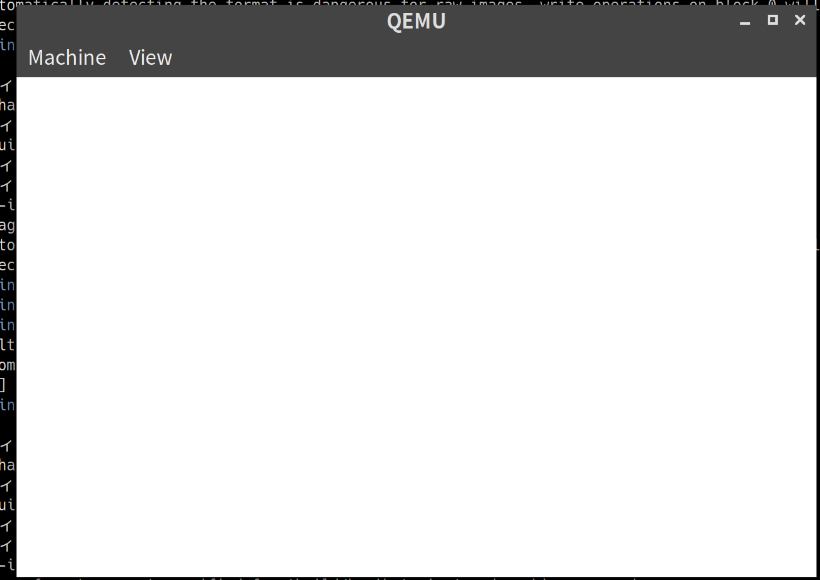

「30日でできる！OS自作入門」をRustで。3日目
「30日でできる！OS自作入門 」 を読みはじめた。 せっかくなのでCの部分はできるだけRustで書いてみようと思う。Cの導入部分からなので、3日目から開始となる。
この記事の成果物となるコードは yoshitsugu/haribote_os_in_rust においてある。
検証環境としてはx86_64のLinuxマシンとなる。
下準備
まずはRustのプロジェクトを準備
$ cargo new --lib haribote_os_in_rustRust nightlyの機能を使いたいので、nightlyが使われるようにしておく。
$ rustup override set nightlyasmファイルは本家のものからコピーして /asm 以下に配置した。また、ビルドしたものは /build に置くことにする。
ipl.asm, asmhead.asm のアセンブルのため、Makefileを作成しておく。
OUTPUT_DIR := build
ASM_DIR := asm
OUTPUT_DIR_KEEP := $(OUTPUT_DIR)/.keep
$(OUTPUT_DIR)/ipl.bin: $(ASM_DIR)/ipl.asm Makefile $(OUTPUT_DIR_KEEP)
$(OUTPUT_DIR)/asmhead.bin: $(ASM_DIR)/asmhead.asm Makefile $(OUTPUT_DIR_KEEP)
$(OUTPUT_DIR)/%.bin: $(ASM_DIR)/%.asm Makefile $(OUTPUT_DIR_KEEP)
nasm $< -o $@
$(OUTPUT_DIR_KEEP):
mkdir -p $(OUTPUT_DIR)
touch $@Rustのコードを書く
ここでは、最終的に白い画面がでたら成功とする。(若干4日目を先取りしている。)
#![no_std]
#![feature(asm)]
#![feature(start)]
use core::panic::PanicInfo;
#[no_mangle]
fn hlt() {
unsafe {
// assembly で "HLT" したのと同じ効果がある。
asm!("hlt");
}
}
#[no_mangle]
fn show_white(i: u32) {
// 白色なので15
let a: u8 = 15;
// 生ポインタを使って、15を代入
let ptr = unsafe { &mut *(i as *mut u8) };
*ptr = a
}
#[no_mangle]
#[start]
pub extern "C" fn haribote_os() -> ! {
// 本にある通り、0xa0000から0xaffffまで描画
for i in 0xa0000..0xaffff {
show_white(i);
}
loop {
hlt()
}
}
#[panic_handler]
fn panic(_info: &PanicInfo) -> ! {
loop {
hlt()
}
}RustのコードをOSとして動かすために、OSが機能を提供しているものを排除する必要がある。このため、 #![no_std] でstdライブラリを使用しないようにしている。また、panicの時のhandlerも自分で設定する必要がある。
このあたり、Writing an OS in Rust というシリーズもののブログもあり、大変参考になった。
Rustをコンパイルする
既存のターゲットトリプルへのコンパイルでは動かないため、まずは、カスタムターゲットの設定が必要になる。
i686-haribote.json という名前でターゲットの設定ファイルを作る。(名前はなんでもよい)
{
"arch": "x86",
"data-layout": "e-m:e-p:32:32-f64:32:64-f80:32-n8:16:32-S128",
"llvm-target": "i686-unknown-none",
"features": "",
"target-endian": "little",
"target-pointer-width": "32",
"target-c-int-width": "32",
"os": "none",
"code-model": "kernel",
"relocation-model": "static",
"archive-format": "gnu",
"target-env": "gnu",
"no-compiler-rt": false,
"linker-flavor": "ld",
"linker-is-gnu": true,
"disable-redzone": true,
"eliminate-frame-pointer": false
}ビルドの時に --target i686-haribote.json としてもよいが、毎回指定するのも大変なため、 .cargo/config に記載しておく
[build]
target = "i686-haribote.json"
Cargo.toml も調整が必要。panic時にstackがunwindされるのを防ぐため、 panic = "abort" を指定。また、Rustコードはstaticlibとしてビルドするようにする。
// Cargo.toml
[profile.dev]
opt-level = 2
lto = true
panic = "abort"
[profile.release]
opt-level = 2
lto = true
panic = "abort"
[lib]
name = "haribote_os"
crate-type = ["staticlib"]ビルド時には cargo build の代わりに、 cargo xbuild を使用する。これは、 Rust Coreライブラリという最低限のデータ構造などのセットを提供してくれるものを使用するときに便利だ。
$ cargo xbuild
Updating crates.io index
Compiling compiler_builtins v0.1.15
Compiling core v0.0.0 (/home/yoshitsugu/.rustup/toolchains/nightly-2019-05-22-x86_64-unknown-linux-gnu/lib/rustlib/src/rust/src/libcore)
Compiling rustc-std-workspace-core v1.0.0 (/home/yoshitsugu/.rustup/toolchains/nightly-2019-05-22-x86_64-unknown-linux-gnu/lib/rustlib/src/rust/src/tools/rustc-std-workspace-core)
Compiling alloc v0.0.0 (/tmp/xargo.cfpYnFIu22Gj)
Finished release [optimized] target(s) in 28.31s
Compiling hariboteos_in_rust v0.1.0 (/home/yoshitsugu/src/github.com/yoshitsugu/hariboteos_in_rust)
Finished dev [optimized + debuginfo] target(s) in 0.46simgを作る
ここからは こちらの記事 を参考にOSとして動くようにしていく。
まずは上記のRustコードから生成されたライブラリのリンクをする。(実際はファイルのフォーマットのみでリンクは行っていないようだ。)
$ ld -v -nostdlib -m elf_i386 -Tdata=0x00310000 -Tkernel.ld libharibote_os.a -o kernel.bin上記のkernel.binとasmから作ったasmhead.binを結合してsysファイルを作る
$ cat asmhead.bin kernel.bin > haribote.sys最後にOSイメージの作成をする
$ mformat -f 1440 -C -B ipl.bin -i haribote.img ::
$ mcopy haribote.sys -i haribote.img ::この辺りの操作もMakefileに追記しておく
# 前述のMakefileに追記する
IMG := $(OUTPUT_DIR)/haribote.img
default:
make img
asm :
make $(OUTPUT_DIR)/ipl.bin
img :
make $(IMG)
run :
make img
qemu-system-i386 -fda $(IMG)
debug :
make img
qemu-system-i386 -fda $(IMG) -gdb tcp::10000 -S
clean :
rm -rf $(OUTPUT_DIR)/*
$(OUTPUT_DIR)/kernel.bin: $(OUTPUT_DIR)/libharibote_os.a $(OUTPUT_DIR_KEEP)
ld -v -nostdlib -m elf_i386 -Tdata=0x00310000 -Tkernel.ld $< -o $@
$(OUTPUT_DIR)/libharibote_os.a: $(OUTPUT_DIR_KEEP)
cargo xbuild --target-dir $(OUTPUT_DIR)
cp $(OUTPUT_DIR)/i686-haribote/debug/libharibote_os.a $(OUTPUT_DIR)/確認
make runでQEMUが起動し、確認できる。
